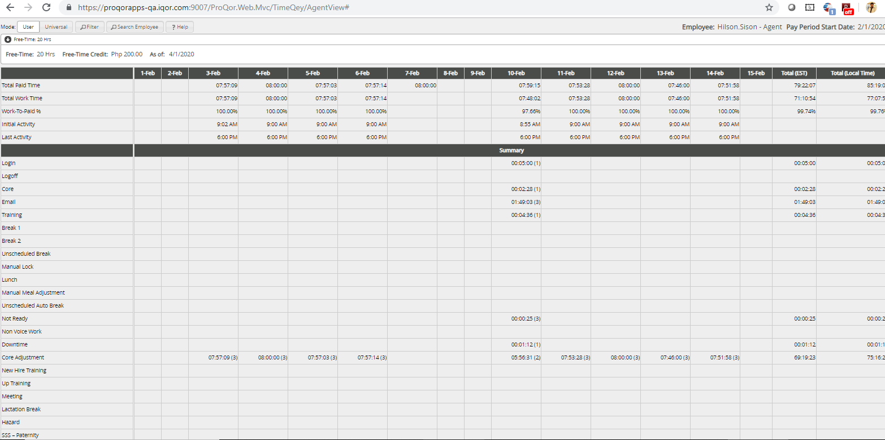

Time Sheet/PTO use
Problem: Clent reported that end user is having problems understand the spreed sheet
Reviewed Spreed Sheet and looked for problems.
Problems found:
- small fount
- information all over the page
- lack of color
- limit to no icons
- no clear way to motif page for easier readablity
End User:
This spreedsheet is used in relatal stores where people often have limited time to review domcumtation so user read ablity is very importent. retail stores often have limited time for training so having something that's more user friendly means people well be able to quickly understand what is happening on the page and being able star learning the new task without needing alot of training to learn the skill.
Project Model

Changes Made:
- Added a User Info Side
- It was hard to see which employee's time sheet was on Screen
- date is clear at the top of the page
- pay period is under user name
- adding 3 buttons give the user the abity to choice what data they see
- by making buttons save space lets the user be able to fully see the sheet
- having the freetime guild shows relieved information as well
- having a quick look up of PTO hours for user friendliness
- Buttons at the top to easy navagetion
- zoom in and zoom out and a print button
- title bar to know what view one is looking at
- Gray and white guild lines
- color blind color scheme